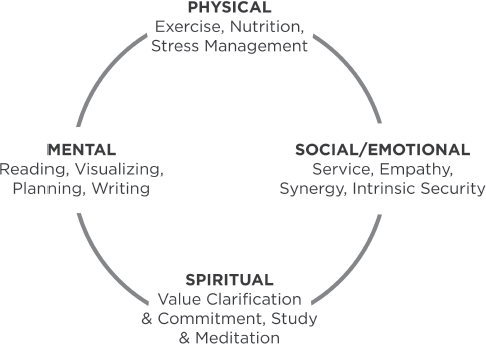
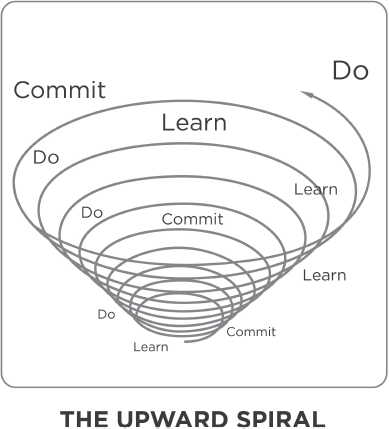

PRINCIPLES OF BALANCED SELF-RENEWAL
Sometimes when I consider what tremendous consequences come from little things… I am tempted to think… there are no little things.
BRUCE BARTON
Suppose you were to come upon someone in the woods working feverishly to saw down a tree.
“What are you doing?” you ask.
“Can’t you see?” comes the impatient reply. “I’m sawing down this tree.”
“You look exhausted!” you exclaim. “How long have you been at it?”
“Over five hours,” he returns, “and I’m beat! This is hard work.”
“Well, why don’t you take a break for a few minutes and sharpen that saw?” you inquire. “I’m sure it would go a lot faster.”
“I don’t have time to sharpen the saw,” the man says emphatically. “I’m too busy sawing!”
***
Habit 7 is taking time to sharpen the saw. It surrounds the other habits on the Seven Habits paradigm because it is the habit that makes all the others possible.
Habit 7 is personal PC. It’s preserving and enhancing the greatest asset you have—you. It’s renewing the four dimensions of your nature—physical, spiritual, mental, and social/emotional.

Although different words are used, most philosophies of life deal either explicitly or implicitly with these four dimensions. Philosopher Herb Shepherd describes the healthy balanced life around four values: perspective (spiritual), autonomy (mental), connectedness (social), and tone (physical). George Sheehan, the running guru, describes four roles: being a good animal (physical), a good craftsman (mental), a good friend (social), and a saint (spiritual). Sound motivation and organization theory embrace these four dimensions or motivations—the economic (physical); how people are treated (social); how people are developed and used (mental); and the service, the job, the contribution the organization gives (spiritual).
“Sharpen the saw” basically means expressing all four motivations. It means exercising all four dimensions of our nature, regularly and consistently in wise and balanced ways.
To do this, we must be proactive. Taking time to sharpen the saw is a definite Quadrant II activity, and Quadrant II must be acted on. Quadrant I, because of its urgency, acts on us; it presses upon us constantly. Personal P/C must be pressed upon until it becomes second nature, until it becomes a kind of healthy addiction. Because it’s at the center of our Circle of Influence, no one else can do it for us. We must do it for ourselves.
This is the single most powerful investment we can ever make in life—investment in ourselves, in the only instrument we have with which to deal with life and to contribute. We are the instruments of our own performance, and to be effective, we need to recognize the importance of taking time regularly to sharpen the saw in all four ways.
The Physical Dimension
The physical dimension involves caring effectively for our physical body—eating the right kinds of foods, getting sufficient rest and relaxation, and exercising on a regular basis.
Exercise is one of those Quadrant II, high-leverage activities that most of us don’t do consistently because it isn’t urgent. And because we don’t do it, sooner or later we find ourselves in Quadrant I, dealing with the health problems and crises that come as a natural result of our neglect.
Most of us think we don’t have enough time to exercise. What a distorted paradigm! We don’t have time not to. We’re talking about three to six hours a week—or a minimum of thirty minutes a day, every other day. That hardly seems an inordinate amount of time considering the tremendous benefits in terms of the impact on the other 162–165 hours of the week.
And you don’t need any special equipment to do it. If you want to go to a gym or a spa to use the equipment or enjoy some skill sports such as tennis or racquetball, that’s an added opportunity. But it isn’t necessary to sharpen the saw.
A good exercise program is one that you can do in your own home and one that will build your body in three areas: endurance, flexibility, and strength.
Endurance comes from aerobic exercise, from cardiovascular efficiency—the ability of your heart to pump blood through your body.
Although the heart is a muscle, it cannot be exercised directly. It can only be exercised through the large muscle groups, particularly the leg muscles. That’s why exercises like rapid walking, running, biking, swimming, cross-country skiing, and jogging are so beneficial.
You are considered minimally fit if you can increase your heart rate to at least one hundred beats per minute and keep it at that level for thirty minutes.
Ideally you should try to raise your heart rate to at least sixty percent of your maximum pulse rate, the top speed your heart can beat and still pump blood through your body. Your maximum heart rate is generally accepted to be 220 less your age. So, if you are 40, you should aim for an exercise heart rate of 108 (220 – 40 = 180 × 0.6 = 108). The “training effect” is generally considered to be between 72 and 87 percent of your personal maximum rate.
Flexibility comes through stretching. Most experts recommend warming up before and cooling down/stretching after aerobic exercise. Before, it helps loosen and warm the muscles to prepare for more vigorous exercise. After, it helps to dissipate the lactic acid so that you don’t feel sore and stiff.
Strength comes from muscle resistance exercises—like simple calisthenics, push-ups, pull-ups, and sit-ups, and from working with weights. How much emphasis you put on developing strength depends on your situation. If you’re involved in physical labor or athletic activities, increased strength will improve your skill. If you have a basically sedentary job and success in your life-style does not require a lot of strength, a little toning through calisthenics in addition to your aerobic and stretching exercises might be sufficient.
I was in a gym one time with a friend of mine who has a Ph.D. in exercise physiology. He was focusing on building strength. He asked me to “spot” him while he did some bench presses and told me at a certain point he’d ask me to take the weight. “But don’t take it until I tell you,” he said firmly.
So I watched and waited and prepared to take the weight. The weight went up and down, up and down. And I could see it begin to get harder. But he kept going. He would start to push it up and I’d think, “There’s no way he’s going to make it.” But he’d make it. Then he’d slowly bring it back down and start back up again. Up and down, up and down.
Finally, as I looked at his face, straining with the effort, his blood vessels practically jumping out of his skin, I thought, “This is going to fall and collapse his chest. Maybe I should take the weight. Maybe he’s lost control and he doesn’t even know what he’s doing.” But he’d get it safely down. Then he’d start back up again. I couldn’t believe it.
When he finally told me to take the weight, I said, “Why did you wait so long?”
“Almost all the benefit of the exercise comes at the very end, Stephen,” he replied. “I’m trying to build strength. And that doesn’t happen until the muscle fiber ruptures and the nerve fiber registers the pain. Then nature overcompensates and within 48 hours, the fiber is made stronger.”
I could see his point. It’s the same principle that works with emotional muscles as well, such as patience. When you exercise your patience beyond your past limits, the emotional fiber is broken, nature overcompensates, and next time the fiber is stronger.
***
Now my friend wanted to build muscular strength. And he knew how to do it. But not all of us need to develop that kind of strength to be effective. “No pain, no gain” has validity in some circumstances, but it is not the essence of an effective exercise program.
The essence of renewing the physical dimension is to sharpen the saw, to exercise our bodies on a regular basis in a way that will preserve and enhance our capacity to work and adapt and enjoy.
And we need to be wise in developing an exercise program. There’s a tendency, especially if you haven’t been exercising at all, to overdo. And that can create unnecessary pain, injury, and even permanent damage. It’s best to start slowly. Any exercise program should be in harmony with the latest research findings, with your doctor’s recommendations and with your own self-awareness.
If you haven’t been exercising, your body will undoubtedly protest this change in its comfortable downhill direction. You won’t like it at first. You may even hate it. But be proactive. Do it anyway. Even if it’s raining on the morning you’ve scheduled to jog, do it anyway. “Oh good! It’s raining! I get to develop my willpower as well as my body!”
You’re not dealing with quick fix; you’re dealing with a Quadrant II activity that will bring phenomenal long-term results. Ask anyone who has done it consistently. Little by little, your resting pulse rate will go down as your heart and oxygen processing system becomes more efficient. As you increase your body’s ability to do more demanding things, you’ll find your normal activities much more comfortable and pleasant. You’ll have more afternoon energy, and the fatigue you’ve felt that’s made you “too tired” to exercise in the past will be replaced by an energy that will invigorate everything you do.
Probably the greatest benefit you will experience from exercising will be the development of your Habit 1 muscles of proactivity. As you act based on the value of physical well-being instead of reacting to all the forces that keep you from exercising, your paradigm of yourself, your self-esteem, your self-confidence, and your integrity will be profoundly affected.
The Spiritual Dimension
Renewing the spiritual dimension provides leadership to your life. It’s highly related to Habit 2.
The spiritual dimension is your core, your center, your commitment to your value system. It’s a very private area of life and a supremely important one. It draws upon the sources that inspire and uplift you and tie you to the timeless truths of all humanity. And people do it very, very differently.
I find renewal in daily prayerful meditation on the scriptures because they represent my value system. As I read and meditate, I feel renewed, strengthened, centered and recommitted to serve.
Immersion in great literature or great music can provide a similar renewal of the spirit for some. There are others who find it in the way they communicate with nature. Nature bequeaths its own blessing on those who immerse themselves in it. When you’re able to leave the noise and the discord of the city and give yourself up to the harmony and rhythm of nature, you come back renewed. For a time, you’re undisturbable, almost unflappable, until gradually the noise and the discord from outside start to invade that sense of inner peace.
***
Arthur Gordon shares a wonderful, intimate story of his own spiritual renewal in a little story called “The Turn of the Tide.” It tells of a time in his life when he began to feel that everything was stale and flat. His enthusiasm waned; his writing efforts were fruitless. And the situation was growing worse day by day.
Finally, he determined to get help from a medical doctor. Observing nothing physically wrong, the doctor asked him if he would be able to follow his instructions for one day.
When Gordon replied that he could, the doctor told him to spend the following day in the place where he was happiest as a child. He could take food, but he was not to talk to anyone or to read or write or listen to the radio. He then wrote out four prescriptions and told him to open one at nine, twelve, three, and six o’clock.
“Are you serious?” Gordon asked him.
“You won’t think I’m joking when you get my bill!” was the reply.
So the next morning, Gordon went to the beach. As he opened the first prescription, he read “Listen carefully.” He thought the doctor was insane. How could he listen for three hours? But he had agreed to follow the doctor’s orders, so he listened. He heard the usual sounds of the sea and the birds. After a while, he could hear the other sounds that weren’t so apparent at first. As he listened, he began to think of lessons the sea had taught him as a child—patience, respect, an awareness of the interdependence of things. He began to listen to the sounds—and the silence—and to feel a growing peace.
At noon, he opened the second slip of paper and read “Try reaching back.” “Reaching back to what?” he wondered. Perhaps to childhood, perhaps to memories of happy times. He thought about his past, about the many little moments of joy. He tried to remember them with exactness. And in remembering, he found a growing warmth inside.
At three o’clock, he opened the third piece of paper. Until now, the prescriptions had been easy to take. But this one was different; it said “Examine your motives.” At first he was defensive. He thought about what he wanted—success, recognition, security—and he justified them all. But then the thought occurred to him that those motives weren’t good enough, and that perhaps therein was the answer to his stagnant situation.
He considered his motives deeply. He thought about past happiness. And at last, the answer came to him.
“In a flash of certainty,” he wrote, “I saw that if one’s motives are wrong, nothing can be right. It makes no difference whether you are a mailman, a hairdresser, an insurance salesman, a housewife—whatever. As long as you feel you are serving others, you do the job well. When you are concerned only with helping yourself, you do it less well—a law as inexorable as gravity.”
When six o’clock came, the final prescription didn’t take long to fill. “Write your worries on the sand,” it said. He knelt and wrote several words with a piece of broken shell; then he turned and walked away. He didn’t look back; he knew the tide would come in.
***
Spiritual renewal takes an investment of time. But it’s a Quadrant II activity we don’t really have time to neglect.
The great reformer Martin Luther is quoted as saying, “I have so much to do today, I’ll need to spend another hour on my knees.” To him, prayer was not a mechanical duty but rather a source of power in releasing and multiplying his energies.
Someone once inquired of a Far Eastern Zen master, who had a great serenity and peace about him no matter what pressures he faced, “How do you maintain that serenity and peace?” He replied, “I never leave my place of meditation.” He meditated early in the morning and for the rest of the day, he carried the peace of those moments with him in his mind and heart.
The idea is that when we take time to draw on the leadership center of our lives, what life is ultimately all about, it spreads like an umbrella over everything else. It renews us, it refreshes us, particularly if we recommit to it.
This is why I believe a personal mission statement is so important. If we have a deep understanding of our center and our purpose, we can review and recommit to it frequently. In our daily spiritual renewal, we can visualize and “live out” the events of the day in harmony with those values.
Religious leader David O. McKay taught, “The greatest battles of life are fought out daily in the silent chambers of the soul.” If you win the battles there, if you settle the issues that inwardly conflict, you feel a sense of peace, a sense of knowing what you’re about. And you’ll find that the public victories—where you tend to think cooperatively, to promote the welfare and good of other people, and to be genuinely happy for other people’s successes—will follow naturally.
Most of our mental development and study discipline comes through formal education. But as soon as we leave the external discipline of school, many of us let our minds atrophy. We don’t do any more serious reading, we don’t explore new subjects in any real depth outside our action fields, we don’t think analytically, we don’t write—at least not critically or in a way that tests our ability to express ourselves in distilled, clear, and concise language. Instead, we spend our time watching TV.
Continuing surveys indicate that television is on in most homes some thirty-five to forty-five hours a week. That’s as much time as many people put into their jobs, more than most put into school. It’s the most powerful socializing influence there is. And when we watch, we’re subject to all the values that are being taught through it. That can powerfully influence us in very subtle and imperceptible ways.
Wisdom in watching television requires the effective self-management of Habit 3, which enables you to discriminate and to select the informing, inspiring, and entertaining programs which best serve and express your purpose and values.
In our family, we limit television watching to around seven hours a week, an average of about an hour a day. We had a family council at which we talked about it and looked at some of the data regarding what’s happening in homes because of television. We found that by discussing it as a family when no one was defensive or argumentative, people started to realize the dependent sickness of becoming addicted to soap operas or to a steady diet of a particular program.
I’m grateful for television and for the many high quality educational and entertainment programs. They can enrich our lives and contribute meaningfully to our purposes and goals. But there are many programs that simply waste our time and minds and many that influence us in negative ways if we let them. Like the body, television is a good servant but a poor master. We need to practice Habit 3 and manage ourselves effectively to maximize the use of any resource in accomplishing our missions.
Education—continuing education, continually honing and expanding the mind—is vital mental renewal. Sometimes that involves the external discipline of the classroom or systematized study programs; more often it does not. Proactive people can figure out many, many ways to educate themselves.
It is extremely valuable to train the mind to stand apart and examine its own program. That, to me, is the definition of a liberal education—the ability to examine the programs of life against larger questions and purposes and other paradigms. Training, without such education, narrows and closes the mind so that the assumptions underlying the training are never examined. That’s why it is so valuable to read broadly and to expose yourself to great minds.
There’s no better way to inform and expand your mind on a regular basis than to get into the habit of reading good literature. That’s another high leverage Quadrant II activity. You can get into the best minds that are now or that have ever been in the world. I highly recommend starting with a goal of a book a month, then a book every two weeks, then a book a week. “The person who doesn’t read is no better off than the person who can’t read.”
Quality literature, such as the Great Books, the Harvard Classics, autobiographies, National Geographic and other publications that expand our cultural awareness, and current literature in various fields can expand our paradigms and sharpen our mental saw, particularly if we practice Habit 5 as we read and seek first to understand. If we use our own autobiography to make early judgments before we really understand what an author has to say, we limit the benefits of the reading experience.
Writing is another powerful way to sharpen the mental saw. Keeping a journal of our thoughts, experiences, insights, and learnings promotes mental clarity, exactness, and context. Writing good letters—communicating on the deeper level of thoughts, feelings, and ideas rather than on the shallow, superficial level of events—also affects our ability to think clearly, to reason accurately, and to be understood effectively.
Organizing and planning represent other forms of mental renewal associated with Habits 2 and 3. It’s beginning with the end in mind and being able mentally to organize to accomplish that end. It’s exercising the visualizing, imagining power of your mind to see the end from the beginning and to see the entire journey, at least in principles, if not in steps.
It is said that wars are won in the general’s tent. Sharpening the saw in the first three dimensions—the physical, the spiritual, and the mental—is a practice I call the “Daily Private Victory.” And I commend to you the simple practice of spending one hour a day every day doing it—one hour a day for the rest of your life.
There’s no other way you could spend an hour that would begin to compare with the Daily Private Victory in terms of value and results. It will affect every decision, every relationship. It will greatly improve the quality, the effectiveness, of every other hour of the day, including the depth and restfulness of your sleep. It will build the long-term physical, spiritual, and mental strength to enable you to handle difficult challenges in life.
In the words of Phillips Brooks:
Some day, in the years to come, you will be wrestling with the great temptation, or trembling under the great sorrow of your life. But the real struggle is here, now… Now it is being decided whether, in the day of your supreme sorrow or temptation, you shall miserably fail or gloriously conquer. Character cannot be made except by a steady, long continued process.
The Social/Emotional Dimension
While the physical, spiritual, and mental dimensions are closely related to Habits 1, 2, and 3—centered on the principles of personal vision, leadership, and management—the social/emotional dimension focuses on Habits 4, 5, and 6—centered on the principles of interpersonal leadership, empathic communication, and creative cooperation.
The social and the emotional dimensions of our lives are tied together because our emotional life is primarily, but not exclusively, developed out of and manifested in our relationships with others.
Renewing our social/emotional dimension does not take time in the same sense that renewing the other dimensions does. We can do it in our normal everyday interactions with other people. But it definitely requires exercise. We may have to push ourselves because many of us have not achieved the level of Private Victory and the skills of Public Victory necessary for Habits 4, 5, and 6 to come naturally to us in all our interactions.
Suppose that you are a key person in my life. You might be my boss, my subordinate, my coworker, my friend, my neighbor, my spouse, my child, a member of my extended family—anyone with whom I want or need to interact. Suppose we need to communicate together, to work together, to discuss a jugular issue, to accomplish a purpose or solve a problem. But we see things differently; we’re looking through different glasses. You see the young lady, and I see the old woman.
So I practice Habit 4. I come to you and I say, “I can see that we’re approaching this situation differently. Why don’t we agree to communicate until we can find a solution we both feel good about. Would you be willing to do that?” Most people would be willing to say “yes” to that.
Then I move to Habit 5. “Let me listen to you first.” Instead of listening with intent to reply, I listen empathically in order to deeply, thoroughly understand your paradigm. When I can explain your point of view as well as you can, then I focus on communicating my point of view to you so that you can understand it as well.
Based on the commitment to search for a solution that we both feel good about and a deep understanding of each other’s points of view, we move to Habit 6. We work together to produce third alternative solutions to our differences that we both recognize are better than the ones either you or I proposed initially.
Success in Habits 4, 5, and 6 is not primarily a matter of intellect; it’s primarily a matter of emotion. It’s highly related to our sense of personal security.
If our personal security comes from sources within ourselves, then we have the strength to practice the habits of Public Victory. If we are emotionally insecure, even though we may be intellectually very advanced, practicing Habits 4, 5, and 6 with people who think differently on jugular issues of life can be terribly threatening.
Where does intrinsic security come from? It doesn’t come from what other people think of us or how they treat us. It doesn’t come from the scripts they’ve handed us. It doesn’t come from our circumstances or our position.
It comes from within. It comes from accurate paradigms and correct principles deep in our own mind and heart. It comes from inside-out congruence, from living a life of integrity in which our daily habits reflect our deepest values.
I believe that a life of integrity is the most fundamental source of personal worth. I do not agree with the popular success literature that says that self-esteem is primarily a matter of mind set, of attitude—that you can psych yourself into peace of mind.
Peace of mind comes when your life is in harmony with true principles and values and in no other way.
There is also the intrinsic security that comes as a result of effective interdependent living. There is security in knowing that Win/Win solutions do exist, that life is not always “either/or,” that there are almost always mutually beneficial Third Alternatives. There is security in knowing that you can step out of your own frame of reference without giving it up, that you can really, deeply understand another human being. There is security that comes when you authentically, creatively and cooperatively interact with other people and really experience these interdependent habits.
There is intrinsic security that comes from service, from helping other people in a meaningful way. One important source is your work, when you see yourself in a contributive and creative mode, really making a difference. Another source is anonymous service—no one knows it and no one necessarily ever will. And that’s not the concern; the concern is blessing the lives of other people. Influence, not recognition, becomes the motive.
Victor Frankl focused on the need for meaning and purpose in our lives, something that transcends our own lives and taps the best energies within us. The late Dr. Hans Selye, in his monumental research on stress, basically says that a long, healthy, and happy life is the result of making contributions, of having meaningful projects that are personally exciting and contribute to and bless the lives of others. His ethic was “earn thy neighbor’s love.”
In the words of George Bernard Shaw,
This is the true joy in life—that being used for a purpose recognized by yourself as a mighty one. That being a force of nature, instead of a feverish, selfish little clod of ailments and grievances complaining that the world will not devote itself to making you happy. I am of the opinion that my life belongs to the whole community and as long as I live it is my privilege to do for it whatever I can. I want to be thoroughly used up when I die. For the harder I work the more I live. I rejoice in life for its own sake. Life is no brief candle to me. It’s a sort of splendid torch which I’ve got to hold up for the moment and I want to make it burn as brightly as possible before handing it on to future generations.
N. Eldon Tanner has said, “Service is the rent we pay for the privilege of living on this earth.” And there are so many ways to serve. Whether or not we belong to a church or service organization or have a job that provides meaningful service opportunities, not a day goes by that we can’t at least serve one other human being by making deposits of unconditional love.
Most people are a function of the social mirror, scripted by the opinions, the perceptions, the paradigms of the people around them. As interdependent people, you and I come from a paradigm which includes the realization that we are a part of that social mirror.
We can choose to reflect back to others a clear, undistorted vision of themselves. We can affirm their proactive nature and treat them as responsible people. We can help script them as principle-centered, value-based, independent, worthwhile individuals. And, with the Abundance Mentality, we realize that giving a positive reflection to others in no way diminishes us. It increases us because it increases the opportunities for effective interaction with other proactive people.
At some time in your life, you probably had someone believe in you when you didn’t believe in yourself. They scripted you. Did that make a difference in your life?
What if you were a positive scripter, an affirmer, of other people? When they’re being directed by the social mirror to take the lower path, you inspire them toward a higher path because you believe in them. You listen to them and empathize with them. You don’t absolve them of responsibility; you encourage them to be proactive.
***
Perhaps you are familiar with the musical Man of La Mancha. It’s a beautiful story about a medieval knight who meets a woman of the street, a prostitute. She’s being validated in her life-style by all of the people in her life.
But this poet knight sees something else in her, something beautiful and lovely. He also sees her virtue, and he affirms it, over and over again. He gives her a new name—Dulcinea—a new name associated with a new paradigm.
At first, she utterly denies it; her old scripts are overpowering. She writes him off as a wild-eyed fantasizer. But he is persistent. He makes continual deposits of unconditional love and gradually it penetrates her scripting. It goes down into her true nature, her potential, and she starts to respond. Little by little, she begins to change her life-style. She believes it and she acts from her new paradigm, to the initial dismay of everyone else in her life.
Later, when she begins to revert to her old paradigm, he calls her to his deathbed and sings that beautiful song, “The Impossible Dream,” looks her in the eyes, and whispers, “Never forget, you’re Dulcinea.”
***
One of the classic stories in the field of self-fulfilling prophecies is of a computer in England that was accidently programmed incorrectly. In academic terms, it labeled a class of “bright” kids “dumb” kids and a class of supposedly “dumb” kids “bright.” And that computer report was the primary criterion that created the teachers’ paradigms about their students at the beginning of the year.
When the administration finally discovered the mistake five and a half months later, they decided to test the kids again without telling anyone what had happened. And the results were amazing. The “bright” kids had gone down significantly in IQ test points. They had been seen and treated as mentally limited, uncooperative, and difficult to teach. The teachers’ paradigms had become a self-fulfilling prophecy.
But scores in the supposedly “dumb” group had gone up. The teachers had treated them as though they were bright, and their energy, their hope, their optimism, their excitement had reflected high individual expectations and worth for those kids.
These teachers were asked what it was like during the first few weeks of the term. “For some reason, our methods weren’t working,” they replied. “So we had to change our methods.” The information showed that the kids were bright. If things weren’t working well, they figured it had to be the teaching methods. So they worked on methods. They were proactive; they worked in their Circle of Influence. Apparent learner disability was nothing more or less than teacher inflexibility.
***
What do we reflect to others about themselves? And how much does that reflection influence their lives? We have so much we can invest in the Emotional Bank Accounts of other people. The more we can see people in terms of their unseen potential, the more we can use our imagination rather than our memory, with our spouse, our children, our coworkers or employees. We can refuse to label them—we can “see” them in new fresh ways each time we’re with them. We can help them become independent, fulfilled people capable of deeply satisfying, enriching, and productive relationships with others.
Goethe taught, “Treat a man as he is and he will remain as he is. Treat a man as he can and should be and he will become as he can and should be.”
BALANCE IN RENEWAL
The self-renewal process must include balanced renewal in all four dimensions of our nature: the physical, the spiritual, the mental, and the social/emotional.
Although renewal in each dimension is important, it only becomes optimally effective as we deal with all four dimensions in a wise and balanced way. To neglect any one area negatively impacts the rest.
I have found this to be true in organizations as well as in individual lives. In an organization, the physical dimension is expressed in economic terms. The mental or psychological dimension deals with the recognition, development, and use of talent. The social/emotional dimension has to do with human relations, with how people are treated. And the spiritual dimension deals with finding meaning through purpose or contribution and through organizational integrity.
When an organization neglects any one or more of these areas, it negatively impacts the entire organization. The creative energies that could result in tremendous, positive synergy are instead used to fight against the organization and become restraining forces to growth and productivity.
I have found organizations whose only thrust is economic—to make money. They usually don’t publicize that purpose. They sometimes even publicize something else. But in their hearts, their only desire is to make money.
Whenever I find this, I also find a great deal of negative synergy in the culture, generating such things as interdepartmental rivalries, defensive and protective communication, politicking, and masterminding. We can’t effectively thrive without making money, but that’s not sufficient reason for organizational existence. We can’t live without eating, but we don’t live to eat.
At the other end of the spectrum, I’ve seen organizations that focused almost exclusively on the social/emotional dimension. They are, in a sense, some kind of social experiment and they have no economic criteria in their value system. They have no measure or gauge of their effectiveness, and as a result, they lose all kinds of efficiencies and eventually their viability in the marketplace.
I have found many organizations that develop as many as three of the dimensions—they may have good service criteria, good economic criteria, and good human relations criteria, but they are not really committed to identifying, developing, utilizing, and recognizing the talent of people. And if these psychological forces are missing, the style will be a benevolent autocracy and the resulting culture will reflect different forms of collective resistance, adversarialism, excessive turnover, and other deep, chronic, cultural problems.
Organizational as well as individual effectiveness requires development and renewal of all four dimensions in a wise and balanced way. Any dimension that is neglected will create negative force field resistance that pushes against effectiveness and growth. Organizations and individuals that give recognition to each of these four dimensions in their mission statement provide a powerful framework for balanced renewal.
This process of continuous improvement is the hallmark of the Total Quality Movement and a key to Japan’s economic ascendency.
SYNERGY IN RENEWAL
Balanced renewal is optimally synergetic. The things you do to sharpen the saw in any one dimension have positive impact in other dimensions because they are so highly interrelated. Your physical health affects your mental health; your spiritual strength affects your social/emotional strength. As you improve in one dimension, you increase your ability in other dimensions as well.
The Seven Habits of Highly Effective People create optimum synergy among these dimensions. Renewal in any dimension increases your ability to live at least one of the Seven Habits. And although the habits are sequential, improvement in one habit synergetically increases your ability to live the rest.
The more proactive you are (Habit 1), the more effectively you can exercise personal leadership (Habit 2) and management (Habit 3) in your life. The more effectively you manage your life (Habit 3), the more Quadrant II renewing activities you can do (Habit 7). The more you seek first to understand (Habit 5), the more effectively you can go for synergetic Win/Win solutions (Habits 4 and 6). The more you improve in any of the habits that lead to independence (Habits 1, 2, and 3), the more effective you will be in interdependent situations (Habits 4, 5, and 6). And renewal (Habit 7) is the process of renewing all the habits.
As you renew your physical dimension, you reinforce your personal vision (Habit 1), the paradigm of your own self-awareness and free will, of proactivity, of knowing that you are free to act instead of being acted upon, to choose your own response to any stimulus. This is probably the greatest benefit of physical exercise. Each Daily Private Victory makes a deposit in your personal intrinsic security account.
As you renew your spiritual dimension, you reinforce your personal leadership (Habit 2). You increase your ability to live out of your imagination and conscience instead of only your memory, to deeply understand your innermost paradigms and values, to create within yourself a center of correct principles, to define your own unique mission in life, to rescript yourself to live your life in harmony with correct principles and to draw upon your personal sources of strength. The rich private life you create in spiritual renewal makes tremendous deposits in your personal security account.
As you renew your mental dimension, you reinforce your personal management (Habit 3). As you plan, you force your mind to recognize high leverage Quadrant II activities, priority goals, and activities to maximize the use of your time and energy, and you organize and execute your activities around your priorities. As you become involved in continuing education, you increase your knowledge base and you increase your options. Your economic security does not lie in your job; it lies in your own power to produce—to think, to learn, to create, to adapt. That’s true financial independence. It’s not having wealth; it’s having the power to produce wealth. It’s intrinsic.
The Daily Private Victory—a minimum of one hour a day in renewal of the physical, spiritual, and mental dimensions—is the key to the development of the Seven Habits and it’s completely within your Circle of Influence. It is the Quadrant II focus time necessary to integrate these habits into your life, to become principle-centered.
It’s also the foundation for the Daily Public Victory. It’s the source of intrinsic security you need to sharpen the saw in the social/emotional dimension. It gives you the personal strength to focus on your Circle of Influence in interdependent situations—to look at others through the Abundance Mentality paradigm, to genuinely value their differences and to be happy for their success. It gives you the foundation to work for genuine understanding and for synergetic Win/Win solutions, to practice Habits 4, 5, and 6 in an interdependent reality.
Renewal is the principle—and the process—that empowers us to move on an upward spiral of growth and change, of continuous improvement.
To make meaningful and consistent progress along that spiral, we need to consider one other aspect of renewal as it applies to the unique human endowment that directs this upward movement—our conscience. In the words of Madame de Staël, “The voice of conscience is so delicate that it is easy to stifle it: but it is also so clear that it is impossible to mistake it.”
Conscience is the endowment that senses our congruence or disparity with correct principles and lifts us toward them—when it’s in shape.
Just as the education of nerve and sinew is vital to the excellent athlete and education of the mind is vital to the scholar, education of the conscience is vital to the truly proactive, highly effective person. Training and educating the conscience, however, requires even greater concentration, more balanced discipline, more consistently honest living. It requires regular feasting on inspiring literature, thinking noble thoughts and, above all, living in harmony with its still small voice.
Just as junk food and lack of exercise can ruin an athlete’s condition, those things that are obscene, crude, or pornographic can breed an inner darkness that numbs our higher sensibilities and substitutes the social conscience of “Will I be found out?” for the natural or divine conscience of “What is right and wrong?”
In the words of Dag Hammarskjöld,
You cannot play with the animal in you without becoming wholly animal, play with falsehood without forfeiting your right to truth, play with cruelty without losing your sensitivity of mind. He who wants to keep his garden tidy doesn’t reserve a plot for weeds.
Once we are self-aware, we must choose purposes and principles to live by; otherwise the vacuum will be filled, and we will lose our self-awareness and become like groveling animals who live primarily for survival and propagation. People who exist on that level aren’t living; they are “being lived.” They are reacting, unaware of the unique endowments that lie dormant and undeveloped within.
And there is no shortcut in developing them. The law of the harvest governs; we will always reap what we sow—no more, no less. The law of justice is immutable, and the closer we align ourselves with correct principles, the better our judgment will be about how the world operates and the more accurate our paradigms—our maps of the territory—will be.
I believe that as we grow and develop on this upward spiral, we must show diligence in the process of renewal by educating and obeying our conscience. An increasingly educated conscience will propel us along the path of personal freedom, security, wisdom, and power.
Moving along the upward spiral requires us to learn, commit, and do on increasingly higher planes. We deceive ourselves if we think that any one of these is sufficient. To keep progressing, we must learn, commit, and do—learn, commit, and do—and learn, commit, and do again.
